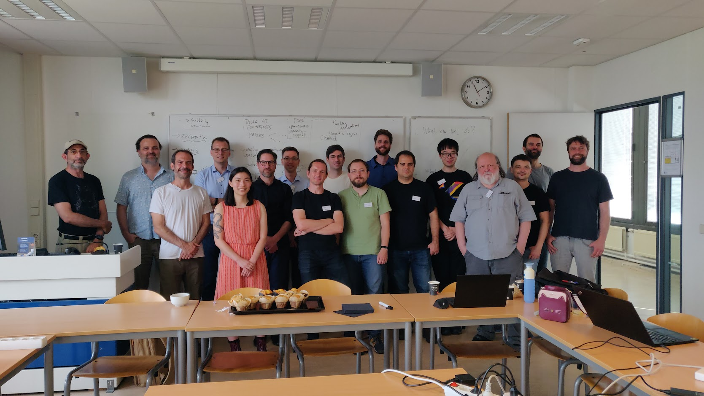

Network analysis software is vital for many fields of science that deal with networks. But how do we ensure that future generations of researchers can keep on using that network analysis software in the future? We report on a high-level workshop meeting between various network analysis packages to discuss their sustainability.
 Network science has shown a rapid growth since the early 2000s. Networks turned out to be useful across a wide array of fields, ranging from biology to sociology. Many of the developed techniques in network science are quite specific to the empirical analysis of networks, but have clear roots in the formal branch of mathematics known as graph theory.
Software
As the field matured, many different software tools have become available that help to do research on networks. These tools are not only used within the field of network science itself, but are also used by many other disciplines for which networks are relevant. Some tools provide click-and-point interfaces that facilitate easy visual exploration of networks. Other tools are more suitable for educational purposes, while others focus on performance and usability. Other packages support inferential statistics. All packages have one thing in common: it is challenging to maintain it.
All software requires maintenance. Almost all software depends on other software, other libraries, and operating systems. Whenever a new version of a dependency comes out, it might be that software that depends on it also needs to be updated. Network analysis software is no different. Without maintenance it would become increasingly more difficult to use as time goes by. Moreover, network science itself also leads to continuous development: faster algorithms, more accurate techniques, and novel concepts that need to be implemented.
Much of the network analysis software relies on volunteers. Few packages take a commercial route, and even those who do, may struggle to have sufficient resources. Maintaining and developing network analysis software is not easy. It not only requires coding skills, it often also requires some theoretical understanding of the mathematics involved. This is a quite unique combination of skills.

Challenges
On 21-22 June 2023, representatives of various network analysis packages met in Leiden University to discuss the sustainability of their packages. During the workshop, we identified a number of common challenges.
One discussion point included technical issues, such as data formats to easily exchange networks between packages and differences between various implementations. These things are relevant when working with real datasets. For instance, there is often additional data for a node, related for instance to biological functions or classrooms in social networks from schools, but transporting this easily from one package to another can be challenging. Some packages count loops twice to maintain certain mathematical invariants, others count them once following the principle of least surprise for new users, and while this may seem a trivial difference, it also has consequences for other measures, such as centrality, and users wonder how to deal with these differences.
Another point related to resources for maintaining and developing network packages. Many projects started out as hobby projects, but hobbies change, or other priorities in life take over, making it difficult to keep maintaining that network package. At the same time, the community has grown to depend on those packages, making it even more important that somebody maintains the package. The concerns also go beyond maintenance, it is also a question of support: with growing users there is an ever increase in questions by users. Unfortunately, the number of users that reply to other users does not seem to scale with the number of users asking questions, increasing the burden on maintainers.
This brings us to the third point, namely the involvement of the broader community. Clearly there is a large community of people interested in network analysis packages, and while this includes many researchers in academia, this also includes people in non-governmental organisations or enterprises. But how do we reach those communities? How do we involve those broader communities with these software packages?
Solutions
We didn’t just discuss challenges, we also discussed various potential solutions. Many of the technical challenges can be addressed with more discussion and work among the various network packages. A critical barrier to those technical challenges is the resources to make that happen. Luckily, there are various dedicated funding programs targeted at research software, such as CZI EOSS or the DFG, or funding programs targeted at open source software more generally, such as the Sovereign Tech Fund. However, even such funding streams are typically limited to a time horizon of at most a few years. A more structural, long-term solution is necessary.
One interesting suggestion for funding revolves around academic users, which most likely represent a large share of the total user base. Many researchers apply for funding to do research, and grants typically cover salaries of researchers and travel costs. However, grants can often also cover other things infrastructure costs. Many of the network analysis packages are open, and free to use. But what if a fraction, say 1% of a grant, would be reserved to support the software packages it intends to use in its research?
Although funding is important to ensure the sustainability of network analysis software, it can never be done without the support of the broader community. This includes stimulating users to be active on support forums, helping out others when needed. We could also teach students in network science to not only make use of existing tools, but also help contribute back. This can range from supporting other users and improving documentation to fixing bugs. Some students might even consider becoming more involved as maintainers. Conferences in network science could also dedicate time to specific software events, such as hackathons. There could be special network software prizes to draw more attention to network analysis software, following the example of the Richards Awards. Many maintainers and developers are also academics, and citing the package that you used for your research may be critical to their academic success.
Organisation
Critically, many of the suggestions above need a longer term commitment, going beyond this blogpost, and going beyond the workshop that we organised. There was consensus among all participating packages that we should therefore set up a separate organisation. A collective organisation that can represent all network packages and advocate on their behalf: the Network Analysis Software Collective. The central mission of the Network Analysis Software Collective is to promote and coordinate the sustainability of community-driven network analysis software. We already reached out to other network analysis software packages and to the Network Science Society and the International Network for Social Network Analysis. We look forward to collaborating with all parties involved to make this a success.